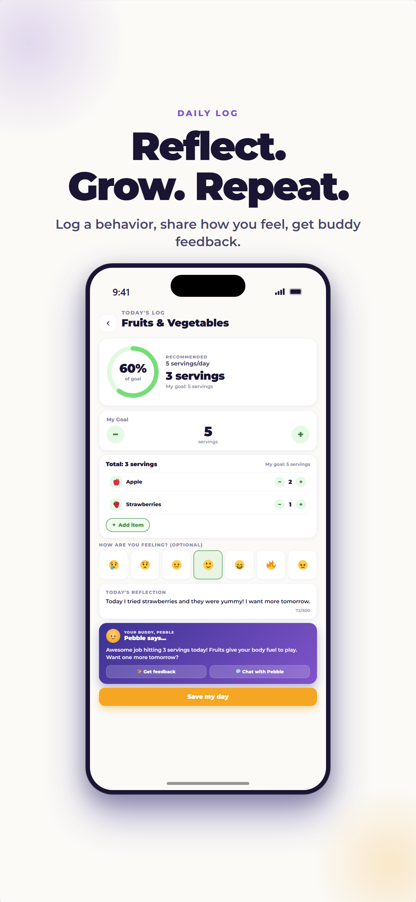

Bedtime can turn into the moment when every unfinished thought, missing water bottle, and last request appears at once. A useful routine does not remove every protest. It makes the next step predictable, gives a child a little control, and protects enough time for sleep.
Work backward from wake time, reserve about 30 minutes for a repeatable wind-down, move stimulating screens out of the final hour, and keep the order similar even when the clock shifts. Start with one step your family can repeat.
Educational, not medical advice
Children differ in health, development, ability, sensory needs, and family circumstances. Use this guide for general education and ask your child’s pediatrician about individual needs or safety concerns.
Start with enough sleep opportunity
The CDC lists different sleep ranges by age: ages 6–12 generally need 9–12 hours in a 24-hour period, while ages 13–18 generally need 8–10 hours. These are starting points, not personalized prescriptions. Work backward from the required wake time to create a reasonable sleep window, then begin the routine before the intended lights-out time.
Bedtime is not the same as sleep time. A child may need time to settle. Build in enough margin that the routine does not end with everyone racing the clock.
“Your body needs a real chance to rest before school. Let’s count backward from wake-up time and choose when our wind-down will begin.”
A flexible 30-minute bedtime routine
Use this as a sequence, not a rigid test. Some children need longer transitions, sensory accommodations, medication routines, or caregiver support.
- 30 minutes before bed: close the day. Put school items in their place, take a final bathroom or water break, and dim bright household lights where possible.
- 25 minutes before bed: wash up. Use the bathroom, brush teeth, and change into comfortable sleep clothes. Put frequently used items in the same visible place.
- 15 minutes before bed: choose one quiet activity. Read together, listen to calm audio, draw, stretch gently, or talk about one good moment from the day.
- 5 minutes before bed: make the ending predictable. Use the same short phrase, hug, song, or check of the room. Keep extra negotiations for tomorrow’s problem-solving time.
- Lights out: protect the sleep space. Keep devices charging outside the bedroom when possible and make the room comfortable for the child’s needs.
The American Academy of Pediatrics recommends a predictable bedtime routine and suggests ending screen use at least an hour before bedtime. If an hour is a large change for your family, move the boundary earlier in manageable steps.
Give choices inside the boundary
The adult can hold the limit while the child chooses details: which pajamas, which book, or whether toothbrushing comes before changing clothes. Avoid offering a choice when “no” is not available.
“Bedtime starts now. Would you like to brush teeth first or put on pajamas first?”
Keep the rhythm recognizable on weekends
Family life includes sleepovers, games, celebrations, and late nights. A weekend routine can be shorter or begin later while keeping the same basic order. Returning to a familiar wake and sleep rhythm helps Monday feel less abrupt. If the schedule shifts, avoid presenting it as a failure; simply return to the usual sequence at the next opportunity.
Troubleshoot the part that is actually hard
- “I’m not tired.” Keep lights low and offer a quiet wind-down rather than turning bedtime into an argument about feelings.
- Repeated requests. Include one planned “last call” for water, bathroom, and questions before reading begins.
- Fear or worry. Listen briefly and seriously. Choose a daytime moment to work on recurring worries instead of dismissing them at night.
- Sibling schedules. Give each child one consistent personal cue even if the household cannot become quiet at the same time.
- The routine is too long. Keep the order but shrink each step. Predictability matters more than an elaborate checklist.
When to ask for professional help
Talk with a pediatrician if your child regularly snores loudly, has pauses or difficulty breathing during sleep, is persistently unable to fall or stay asleep, is unusually sleepy during the day, or if sleep is interfering with school, mood, safety, or family life. Bring a short record of bedtime, wake time, night waking, and what you notice; specific observations are more useful than “sleep is bad.”
Frequently asked questions
What time should a 7- to 17-year-old go to bed?
There is no single bedtime for every child or teen. Work backward from wake time using the CDC’s age-banded range—9–12 hours for ages 6–12 and 8–10 hours for ages 13–18—plus time to settle.
What if my child leaves the room after lights out?
Calmly return them with the same brief response. Check first for a real need, then avoid adding a new activity or long negotiation.
Should we use a bedtime reward chart?
A simple visual routine can reduce reminders. Track attempts or completed steps, not sleep itself—people cannot force themselves to fall asleep on command.
Can ProudMe make my child sleep better?
ProudMe does not treat sleep problems or guarantee an outcome. It can help a family notice and reflect on a chosen routine step.
Sources and further reading
Track tonight’s small bedtime win
Choose one manageable action, notice the attempt, and keep the conversation going. ProudMe supports healthy-habit reflection; it does not provide medical care or guarantee behavior change.
